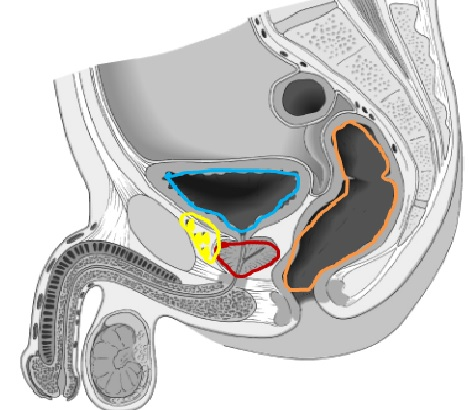
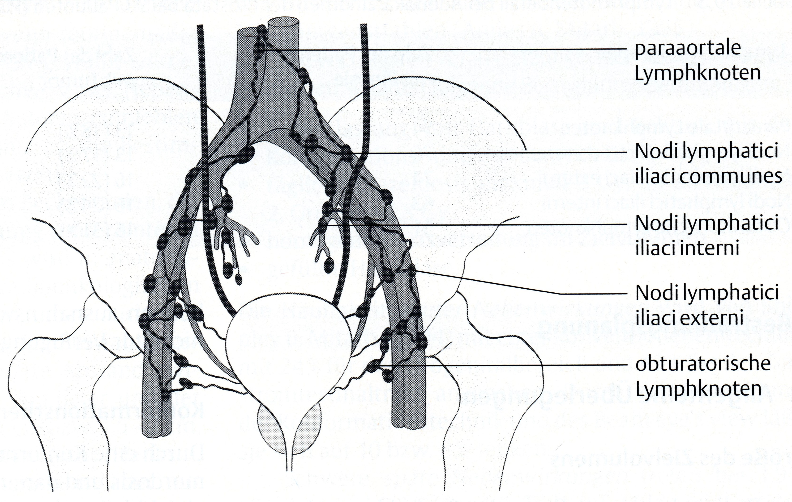

Heute gibt es zwei klare Spuren: Praxis und Kompetenztraining
Diese HTML ist keine lineare Vorlesung und kein digitales Skript. Sie trainiert die Entscheidungen, die für ein Prostata-PLCT im Becken wirklich relevant sind: Vorbereitung, Reproduzierbarkeit, OAR-Denken, Dokumentation und Übergabe an den Linac.
Spur APLCT-Praxisstation mit Herr M.
Spur BHTML-Kompetenzwerkstatt
EndproduktHandover + Exit-Reflexion
PrinzipPflicht · Support · Plus
Mission 01
Start & Ablauf
Orientierung vor Inhalt. Das verhindert Chaos in der Rotation.
Gemeinsames Dach
Prostata-PLCT: Beckenlagerung, Blasenfüllung, Enddarmfüllung, OAR-Bezug, Reproduzierbarkeit und Dokumentation.
Die Praxisstation nutzt den konkreten Fall Herr M. Die HTML trainiert das Denken hinter dieser Handlung.
Was heute nicht passieren soll
- kein vollständiger Onkologie-Unterricht
- kein blindes Nachstellen einer Demo
- kein „Wir scannen halt mal“-Denken
- kein sofort sichtbarer Erwartungshorizont vor eigener Antwort
Rotationsregel: Mission 8 ist immer gültig. Wer zuerst an den PLCT geht, öffnet Mission 8 direkt. Wer später geht, arbeitet bis zum Aufruf in den Kompetenzmissionen weiter.
Pflichtauftrag: Arbeitsvertrag bestätigen
VerbindlichkeitPersönlicher Lernfokus
ReflexionNotiere einen konkreten Punkt, auf den du heute besonders achten willst.
Mindestens 8 Wörter.
Dozentenhinweis: Lass 1–2 Beispiele laut nennen. So wird aus der HTML kein Klickmedium, sondern ein verbindlicher Arbeitsauftrag.
Mission 02
Becken-PLCT-Grundlogik
Du brauchst eine stabile Standardlogik. Aber beim Prostata-Ca. reicht Lagerung allein nicht: Blase und Rektum entscheiden mit über Planbarkeit.
Standardlogik
- Rückenlage, achsgerechtes Becken
- Arme auf Brust oder außerhalb des Scanbereichs
- Beinlagerung reproduzierbar, z. B. Bluebag/Vakuumkissen
- Kopf- und Beinposition dokumentierbar
- Blase geplant gefüllt, Rektum möglichst leer bzw. reproduzierbar
Kritischer Satz
Das Prostata-PLCT ist kein reines Lagerungsproblem.
Eine perfekte Rückenlage nützt wenig, wenn Blase oder Rektum nicht zum geplanten Referenzzustand passen.
Bildanker


Pflichtauftrag: drei sichtbare Qualitätskriterien
PraxisankerNenne drei Dinge, die du am PLCT sichtbar oder gezielt prüfbar bewerten kannst, bevor du das Setting akzeptierst.
- Beckenachse und Rotation
- Blasenfüllung und Trinkprotokoll
- Rektumfüllung / Gas / Stuhl
- Hilfsmittel reproduzierbar und dokumentierbar
- Referenzmarkierung plausibel
Entscheidung: Was ist fachlich besser?
KonsequenzPraxisanker: Wenn du Mission 8 öffnest, übertrage diese drei Qualitätskriterien direkt auf Herr M.
Mission 03
Anatomie, OAR und Scanbereich
OAR sind keine Liste zum Auswendiglernen. Du musst einschätzen, was für Zielvolumen, Planung und spätere CBCT-Beurteilung wirklich relevant ist.
Arbeitslogik
Erst selbst einschätzen, dann vergleichen. Wähle bei jeder Struktur, ob sie für ein Prostata-PLCT relevant oder eher weniger relevant ist. Begründe jede Auswahl in mindestens einem vollständigen Satz.
Räumliche Orientierung
Pflichtauftrag: OAR einschätzen und begründen
FachlogikStruktur
Einschätzung
Begründung – mindestens 8 Wörter
Rektum
Blase
Femurköpfe bds.
Dünndarm
Urethra
Erwartungshorizont
Rektum ist hoch relevant, weil es direkt dorsal an der Prostata liegt und bei voller Füllung die Prostata ventral verschieben kann. Blase ist relevant, weil Füllung und Dosisbelastung zusammenhängen. Femurköpfe sind als OAR planungsrelevant, aber meist weniger entscheidend als Rektum/Blase. Dünndarm ist vor allem bei erweitertem Becken-/Lymphknoten-Zielvolumen stärker relevant. Urethra ist besonders bei Boost-/Hochdosis-Konzepten relevant.
Scanbereich: Was ist das Problem bei zu knappem CT?
TransferErwartungshorizont
Ein zu knapper Datensatz kann Zielvolumen, Sicherheitsbereiche oder Risikoorgane unvollständig erfassen. Planung, Dosisbeurteilung und spätere Reproduzierbarkeit werden unsicher; im ungünstigen Fall muss das PLCT wiederholt werden.
Praxisanker: Beschreibe in Mission 8 den Scanbereich verbal. Nicht millimetergenau, aber fachlich plausibel und nicht zu knapp.
Mission 04
Blase, Rektum und Reproduzierbarkeit
Beim Prostata-Ca. ist die tägliche Anatomie nicht konstant. Genau deshalb ist der Referenzzustand aus dem PLCT so wichtig.
Volle Blase
- verlagert Blasenanteile aus dem Hochdosisbereich
- unterstützt einen reproduzierbaren Beckenreferenzzustand
- muss planbar und für den Patienten tolerierbar sein
- zu volle Blase kann ebenfalls problematisch werden
Leerer / reproduzierbarer Enddarm
- verhindert ventrale Prostataverschiebung durch Füllung oder Gas
- reduziert systematische Abweichungen zwischen PLCT und Fraktionen
- ist für CBCT-Vergleich und Matching zentral
- nicht jeder Darmzustand lässt sich sofort „wegorganisieren“
Pflichtauftrag: Patientenvorbereitung formulieren
KommunikationFormuliere eine kurze patientengerechte Erklärung: Warum soll Herr M. mit voller Blase und möglichst leerem Enddarm zum PLCT und später zur Bestrahlung kommen?
Erwartungshorizont
Eine starke Antwort erklärt verständlich: Die Organe im Becken liegen eng beieinander. Eine ähnlich gefüllte Blase und ein möglichst vergleichbarer Enddarm helfen, die Prostata jeden Tag in ähnlicher Lage zu haben und Blase/Rektum zu schonen. Keine Drohkulisse, sondern klare Mitarbeitserklärung.
Mini-Fälle: Was prüfst du zuerst?
Priorität| Situation | Deine erste Prüfung / Handlung |
|---|---|
| Patient hat kaum getrunken. | |
| Patient hat starken Harndrang. | |
| Scout/CT zeigt stark gasgefülltes Rektum. |
Erwartungshorizont
Kaum getrunken: Trink-/Wartekonzept prüfen, nicht blind scannen. Starker Harndrang: Toleranz und Reproduzierbarkeit kritisch prüfen; ggf. kurze Entlastung und Neuaufbau des Trinkschemas. Gasgefülltes Rektum: nicht einfach akzeptieren; Befund erkennen, Rücksprache/erneute Entscheidung einleiten und dokumentieren.
Kritischer Punkt: „Voll“ und „leer“ sind keine moralischen Kategorien. Entscheidend ist, ob der Zustand planbar, tolerierbar, dokumentiert und später reproduzierbar ist.
Mission 05
Entscheidungslogik: anpassen, stoppen, eskalieren
Eine gute MTR-Entscheidung ist nicht nur „richtig“, sondern priorisiert Planbarkeit, Patientensicherheit und Dokumentation.
Ampelprinzip
| Ampel | Bedeutung | Beispiel |
|---|---|---|
| Grün | MTR kann zunächst selbst handeln und prüfen. | Patient trinkt nach, Lagerung wird ruhig neu aufgebaut. |
| Gelb | kritisch beobachten, Alternative prüfen, Rücksprache vorbereiten. | Blase deutlich zu voll, Patient kann Zustand nicht halten. |
| Rot | nicht einfach fortsetzen; Klärung/Rücksprache nötig. | Rektum stark abweichend, Prostata deutlich verschoben. |
PLCT-Video – Entscheidungssituation
Situation Video 1: Erster PLCT-Versuch. Der Enddarm wird nach dem Scan als zu voll bewertet. Der Scan ist fraglich verwertbar.
PLCT Video 1 – erster Versuch: Enddarm kritisch
Entscheidung 1: Enddarm im PLCT kritisch
KonsequenzPflichtauftrag: eigene Ampelentscheidung
TransferOrdne diese Situation einer Ampel zu und begründe: „Der Patient kommt zur Fraktion 12. Das CBCT zeigt einen deutlich volleren Enddarm als im PLCT und die Prostata ist sichtbar nach ventral verschoben.“
Erwartungshorizont
Mindestens Gelb bis Rot, je nach Ausmaß. Nicht einfach bestrahlen. Begründung: Enddarmfüllung verändert die Prostataposition, Tischkorrektur allein löst das Organfüllungsproblem nicht sicher. Rücksprache/erneute Beurteilung, ggf. Darmoptimierung und erneutes CBCT sind fachlich plausibel.
Praxisanker: In Mission 8 gilt: Nicht nur lagern, sondern laut begründen, wann das Setting akzeptiert oder neu bewertet werden muss.
Mission 06
Dokumentation und Handover
Eine gute PLCT-Handlung ist erst vollständig, wenn sie für das Linac-Team nachvollziehbar dokumentiert ist.
Schlecht
„Prostata-CT gemacht. Blase voll. Rektum okay.“
Problem: keine konkrete Lagerung, keine Füllungsbewertung, keine Abweichung, keine Reproduzierbarkeitsinformation.
Gut
„Prostata-PLCT in Rückenlage mit Bluebag, Arme auf Brust. Blase nach Trinkschema gefüllt, Enddarm nach Beurteilung akzeptabel/reproduzierbar. Referenzmarkierung plausibel, Hinweis für CBCT: Füllstände mit PLCT vergleichen.“
Pflichtauftrag: Dokumentationsbausteine
Handover| Baustein | deine Formulierung |
|---|---|
| Lagerung / Hilfsmittel | |
| Blasenstatus | |
| Rektumstatus | |
| Abweichung / Rücksprache | |
| Hinweis für Ersteinstellung |
Pflichtauftrag: finaler Handover-Satz
AbgabeproduktErwartungshorizont
Ein guter Handover-Satz nennt Lagerung, Hilfsmittel, Blasen-/Rektumstatus, Besonderheit/Abweichung, Reproduzierbarkeit, Rücksprache ja/nein und einen konkreten Hinweis für Ersteinstellung oder tägliches CBCT.
Dozentenhinweis: Diese Mission ist das wichtigste Kontrollfenster der Eigenarbeitsphase. Anhand des Handover-Satzes sieht man, ob Handlung, Entscheidung und Dokumentation verbunden wurden.
Praxisanker: Nach Mission 8 sollte dieser Handover-Satz mit den realen Beobachtungen aus der Praxisstation abgeglichen werden.
Mission 07
Ready for Practice – Startkarte vor oder nach der PLCT-Station
Diese Mission ist keine zusätzliche Theorieaufgabe. Sie verhindert, dass ihr beim Wechsel zwischen HTML und PLCT die Orientierung verliert.
Zweck: Wenn ihr noch nicht am PLCT wart, baut ihr hier euren Startplan. Wenn ihr bereits am PLCT wart, nutzt ihr dieselben Felder als Rückkehrcheck: Was habt ihr praktisch gemacht, was müsst ihr fachlich sichern, was muss dokumentiert werden?
Pflichtauftrag: Praxisstart in 3 × 3
PraxisankerFülle die Felder so aus, dass eine andere Gruppe daraus erkennen könnte, worauf am PLCT besonders zu achten ist.
| Bereich | 3 konkrete Punkte |
|---|---|
| Patientenfragen | |
| Lagerungspunkte | |
| Dokumentationshinweise |
Rollen im Dreierteam planen
TeamDie Rollen müssen nicht perfekt sein, aber sie verhindern, dass alle gleichzeitig „irgendwas“ machen.
| Rolle | Name / konkrete Aufgabe |
|---|---|
| MTR A – Kommunikation | |
| MTR B – Lagerung / Technik | |
| MTR C – Beobachtung / Doku |
Dozentenhinweis: Mission 7 ist der organisatorische Puffer gegen Rotationschaos. Sie ersetzt keine Praxis, sondern stabilisiert den Übergang zwischen eigenständiger HTML-Arbeit und PLCT-Handlung.
Wenn eure Gruppe jetzt aufgerufen wird: Nicht hektisch suchen. Direkt Mission 8 öffnen. Wenn ihr schon an der Praxisstation wart, nutzt Mission 7 als fachliche Nachsortierung.
Praxisstation
PLCT-Praxisstation: Herr M.
Diese Mission funktioniert unabhängig davon, wie weit ihr in der HTML seid. Sie strukturiert eure praktische Handlung am PLCT.
Sofortstart für Gruppe 1: Wenn ihr direkt als erste Gruppe ans PLCT geht, lest nur diese Fallkarte, verteilt Rollen und beginnt. Die Kompetenzmissionen holt ihr danach nach.
Fallkarte Herr M.
Patient
Herr M., 72 Jahre
Indikation
C61 – Prostatakarzinom
Befund
Adenokarzinom, Gleason 7b (4+3), iPSA 18,4 ng/ml
Stadium
cT2b · cN0 · cM0 · ungünstiges Intermediate Risk
Begleiterkrankungen
arterielle Hypertonie, Diabetes mellitus Typ 2, Nykturie bei BPH
Situation
Planungs-CT Becken / Prostata, kurative definitive RT
Lagerung
Rückenlage, Arme auf Brust, Bluebag/Vakuumkissen, Referenzmarkierung
Vorbereitung
Blase geplant gefüllt, Enddarm möglichst leer bzw. reproduzierbar
MTR A – Kommunikation
fragt Trinkstatus, Harndrang, Darmentleerung, Beschwerden und Liegetoleranz ab.
MTR B – Lagerung / Technik
wählt Hilfsmittel, richtet Becken achsgerecht aus und prüft Referenzmarkierung.
MTR C – Beobachtung / Doku
prüft Füllstände, Scanbereich, Reproduzierbarkeit, Abweichungen und formuliert Handover.
Zweck des Beobachtungsbogens light
Er ist keine Benotungsliste und kein zusätzliches Arbeitsblatt. Er zwingt Rolle C dazu, die praktische Handlung fachlich zu beobachten: Was war sicher? Was war kritisch? Was müsste dokumentiert oder rückgesprochen werden? Dadurch entsteht Peer-Feedback, auch wenn der Vertretungsdozent gerade am Gerät gebunden ist.
Beobachtungsbogen light
während der PraxisRegel: Nutze die Haken nicht mechanisch. Ein Haken bedeutet: Die Gruppe kann den Punkt kurz fachlich begründen.
Praxisrückmeldung nach der Rotation
ReflexionDozentenhinweis: Vertretung konzentriert sich hier auf die praktische Handlung. Die HTML übernimmt Struktur, Beobachtung und Kurzreflexion. Der Beobachtungsbogen dient der Peer-Rückmeldung, nicht der formalen Bewertung.
Praxisanker: Praxis ohne Rückmeldung bleibt Erlebnis. Erst die kurze Reflexion macht daraus Kompetenzaufbau.
Mission 09
Tägliche Bestrahlung – CBCT und Fraktionsentscheidung
Diese Station ist bewusst Pflicht. Beim Prostata-Ca. entscheidet die tägliche Reproduzierbarkeit von Blase, Rektum und Prostataposition darüber, ob der Plan sicher auf den Patienten übertragen werden kann.
Warum Pflicht? Die tägliche Bestrahlung ist der eigentliche Realitätscheck des PLCT. Ein schönes Planungs-CT ist wertlos, wenn Füllstände und Prostataposition im Alltag nicht wiedererkannt, bewertet und bei Abweichung eskaliert werden.
Was du im CBCT beurteilst
- Vergleich der Blasenfüllung mit dem PLCT
- Vergleich der Rektumfüllung / Gas / Stuhl mit dem PLCT
- Lage der Prostata bzw. Goldmarker im Verhältnis zur Referenz
- Entscheidung: bestrahlen, korrigieren, erneut scannen oder Rücksprache
Was du nicht tun sollst
- nicht nur Knochen anschauen und Organfüllung ignorieren
- nicht automatisch jeden Shift übernehmen
- nicht bei deutlicher Rektumabweichung „einfach bestrahlen“
- nicht Tischkorrektur mit Lösung des Organfüllungsproblems verwechseln
CBCT-Aufnahmen – Tag 4 und Tag 5
Beurteile für jeden Tag: Sind Blase und Rektum mit dem PLCT vergleichbar? Ist die Prostataposition plausibel? Kann die RT durchgeführt werden?
Tag 4
CBCT Tag 4 – axial: Blase, Rektum, Prostataposition
CBCT Tag 4 – sagittal: Füllstände und ventral/dorsale Lagebeziehung
Tag 5
CBCT Tag 5 – axial: Vergleich zur Referenz und zu Tag 4
CBCT Tag 5 – sagittal: Rektumfüllung, Blasenfüllung, Prostataverschiebung
Pflichtauftrag: CBCT-Entscheidung Tag 4 und Tag 5
BildanalyseFormuliere für beide Tage jeweils: Befund – Vergleich zum PLCT – Entscheidung. Schreibe nicht nur „sieht gut aus“, sondern begründe anhand von Blase, Rektum und Prostataposition.
Mindestens 35 Wörter.
Erwartungshorizont
Gute Antworten vergleichen Rektumfüllung, Blasenfüllung und Prostataposition mit dem PLCT. Wenn Füllstände und Zielstruktur reproduzierbar vergleichbar sind, ist die RT durchführbar. Bei deutlicher Abweichung, z. B. stark gefülltem Rektum mit ventraler Prostataverschiebung, ist Rücksprache und ggf. erneutes Vorgehen nötig.
Pflichtauftrag: Störung in der täglichen RT
klinische EntscheidungFraktion 14 bei Herr M.: Das CBCT zeigt einen deutlich volleren Enddarm als im PLCT. Die Prostata ist etwa 7–8 mm nach ventral verschoben. Was tust du als MTR – und warum?
Mindestens 25 Wörter.
Erwartungshorizont
Die RT wird nicht automatisch gestartet. Die Abweichung liegt außerhalb eines üblichen Toleranzdenkens, das Organfüllungsproblem bleibt trotz Tischkorrektur bestehen. Fachlich korrekt: Situation erkennen, Behandlung stoppen, Rücksprache/ärztliche Entscheidung einleiten, ggf. Darm-/Blasenmanagement und erneutes CBCT, anschließend dokumentieren.
Praxisanker: Die tägliche RT ist nicht nur „Patient rein, CBCT, Shift, Start“. Beim Prostata-Ca. ist die Beurteilung der Organfüllung ein zentraler Sicherheits- und OAR-Schutzschritt.
Mission 10
Sicherung / Exit light
Am Ende zählt nicht, wie viele Stationen geklickt wurden, sondern ob PLCT, tägliche Bestrahlung und klinische Entscheidung zusammen gedacht werden.
Drei Sicherungsfragen
Kernwissen| Frage | deine Antwort |
|---|---|
| Was ist die Standardlogik des Prostata-PLCT und der täglichen RT? | |
| Was kann diese Standardlogik im PLCT und im CBCT gefährden? | |
| Was muss bei deutlichen Abweichungen in der täglichen RT passieren? |
Exit light
AbschlussproduktWas wäre im gesamten Prozess — PLCT bis tägliches CBCT — der kritischste Fehler gewesen und warum?
Erwartungshorizont
Gute Antworten nennen z. B. Blase/Rektum am PLCT nicht prüfen, einen nicht reproduzierbaren Referenzzustand akzeptieren, deutliche Organfüllungsabweichungen im CBCT ignorieren, Beckenrotation übersehen, nur Knochenmatching denken, Tischkorrektur mit Organfüllungsproblem verwechseln oder Abweichungen nicht dokumentieren bzw. nicht rücksprechen.
Selbstbewertung
LernstandBonus A
Zusatzstation: Epidemiologie, Ätiologie und Patientenkommunikation
Diese Station ist kein Lückenfüller. Sie ist eine kleine Recherche-Werkstatt: Du prüfst Quellen, leitest Kernaussagen ab und formulierst patientengerecht.
Arbeitsregel: Nutze mindestens zwei der verlinkten Quellen. Schreibe nicht ab, sondern übersetze die Informationen in MTR-taugliche Sprache.
Quellenstart
Recherchefokus
Worauf du achten sollst
- Wie häufig ist Prostatakrebs im klinischen Alltag?
- Welche Risikofaktoren sind gesichert, welche eher unspezifisch?
- Warum ist Alter fachlich wichtig, aber kein Grund für stereotype Kommunikation?
- Welche Informationen helfen dir bei patientengerechter Erklärung?
Rechercheauftrag 1: Faktencheck statt Bauchgefühl
QuellenarbeitTrage zu jedem Punkt eine kurze, quellenbasierte Aussage ein. Keine langen Texte – aber fachlich belastbar.
| Leitfrage | deine quellenbasierte Kurzantwort |
|---|---|
| Häufigkeit / Altersbezug | |
| Gesicherte Risikofaktoren | |
| Was ist für MTR-Kommunikation relevant? |
Jede Antwort: mindestens 10–12 Wörter.
Rechercheauftrag 2: Patientenfrage beantworten
KommunikationHerr M. fragt beim PLCT: „Habe ich irgendetwas falsch gemacht, dass ich Prostatakrebs bekommen habe?“ Formuliere eine Antwort, die fachlich korrekt, entlastend und nicht bagatellisierend ist.
Mindestens 35 Wörter.
Erwartungshorizont
Eine gute Antwort vermeidet Schuldzuweisung, nennt Alter und familiäre/genetische Faktoren als relevante Risikofaktoren, relativiert Lebensstil ohne ihn zu leugnen und verweist bei individuellen Ursachen-/Therapiefragen an Ärztin/Arzt. MTR-Aufgabe: beruhigen, verständlich erklären, keine ärztliche Beratung ersetzen.
Rechercheauftrag 3: Aussagen prüfen
AmpelcheckBewerte die Aussagen mit „tragfähig“, „verkürzt“ oder „problematisch“ und begründe jeweils kurz.
| Aussage | Bewertung | Begründung |
|---|---|---|
| „Prostatakrebs ist vor allem eine Erkrankung älterer Männer.“ | ||
| „Wenn der PSA-Wert hoch ist, hat der Patient sicher Krebs.“ | ||
| „Epidemiologie ist für die Lagerung egal, aber für Fallverständnis und Kommunikation nützlich.“ |
Fachliche Orientierung: RKI/ZfKD Krebsdaten Deutschland; DKFZ Krebsinformationsdienst; S3-Leitlinie Prostatakarzinom; Tumor Target Therapy als videobasierte Vertiefung.
Bonus B
Zusatzstation: Klinik, Diagnostik und Therapiegespräch
Diese Station nutzt die Quellen nicht als Lesetext, sondern als Material für klinisches Denken: Symptome einordnen, Befundsprache übersetzen, Kommunikationsgrenzen erkennen.
Recherchequellen
Fallakte Herr M. – neu
Alter
72 Jahre
Diagnose
C61 – Prostatakarzinom
Histologie
Gleason 7b (4+3), ISUP 3
PSA / TNM
iPSA 18,4 ng/ml · cT2b cN0 cM0
Begleiterkrankungen
Hypertonie, Diabetes Typ 2, Nykturie bei BPH
Therapie
kurative definitive RT, VMAT/IGRT, ADT geplant
Rechercheauftrag 1: Vom Befund zum Arbeitsauftrag
PraxisübersetzungNicht akademisch zerlegen. Nutze die Quellen, um die Fallakte von Herr M. in einfache Arbeitsaussagen zu übersetzen: Was bedeutet das für Gespräch, PLCT-Vorbereitung und tägliche Bestrahlung?
Arbeitsregel: Du musst PSA, Gleason und TNM nicht vollständig klassifizieren. Entscheidend ist: Was folgt daraus für dein Denken als MTR?
| Situation aus der Fallakte | Welche einfache Aussage passt? | Was bedeutet das praktisch für MTR? |
|---|---|---|
| Herr M. hat fast keine Beschwerden. Er fragt: „Warum ist das dann überhaupt ernst?“ | ||
| PSA 18,4 + Gleason 7b + cT2b. Die Fallakte wirkt nicht wie ein Niedrigrisiko-Zufallsbefund. | ||
| BPH/Nykturie + geplante volle Blase. Der Patient muss für PLCT und RT kooperieren können. |
Je Praxisbegründung mindestens 14 Wörter. Ziel: verständliche Handlungsableitung, keine Lehrbuchdefinition.
Erwartungshorizont
Gute Antworten erkennen: Prostatakarzinom kann früh symptomarm sein; PSA/Gleason/TNM zeigen, dass der Fall ernsthaft kurativ geplant wird, ohne dass MTR Prognosen stellen; BPH/Nykturie sind praktisch relevant, weil volle Blase und reproduzierbare Vorbereitung patientengerecht erklärt und beobachtet werden müssen. Der Schwerpunkt liegt auf PLCT-Qualität, täglicher IGRT und klarer Kompetenzgrenze.
Rechercheauftrag 2: fiktive Patientenfragen
PatientengesprächBeantworte drei Fragen von Herr M. fachlich korrekt, aber innerhalb deiner MTR-Kompetenzgrenze.
| Patientenfrage | deine Antwort |
|---|---|
| „Ich habe fast keine Beschwerden. Warum muss ich dann überhaupt bestrahlt werden?“ | |
| „Warum muss ich jeden Tag mit ähnlicher Blase und ähnlichem Darm kommen?“ | |
| „Was ist besser: Operation oder Bestrahlung?“ |
Jede Antwort: mindestens 25 Wörter.
Erwartungshorizont
Gute Antworten erklären: Prostatakrebs kann früh symptomarm sein; Therapieentscheidung hängt von Risiko, Befund und ärztlicher Beratung ab; Blase/Rektum müssen reproduzierbar sein, weil die Prostata beweglich ist und Risikoorgane geschont werden müssen; OP-vs-RT ist keine MTR-Entscheidung, sondern ärztliche Aufklärung.
Rechercheauftrag 3: Kompetenzgrenze markieren
RollenklärungOrdne zu: Was darfst du als MTR sachlich erklären, was gehört in ärztliche Aufklärung?
| Aussage / Thema | Einordnung | kurze Begründung |
|---|---|---|
| Ablauf am PLCT und Lagerungshilfen | ||
| Individuelle Prognose und Heilungschance | ||
| Warum Blasen-/Rektumfüllung für CBCT wichtig ist |
Fachliche Orientierung: DKFZ Krebsinformationsdienst zu Symptomen und Strahlentherapie; Deutsche Krebshilfe; Tumor Target Therapy; S3-Leitlinie Prostatakarzinom.
Mission Prostata abgeschlossen
Du hast die Kompetenzwerkstatt, die PLCT-Praxisstation, die Pflichtstation zur täglichen Bestrahlung und ggf. Zusatzstationen bearbeitet. Exportiere jetzt dein Lernprotokoll oder drucke es als PDF.
0Pflichtmissionen abgeschlossen
1PLCT-Praxisstation jederzeit öffnbar
1CBCT-Pflichtstation
V5Testversion
Fachliche Orientierung:
- S3-Leitlinie Prostatakarzinom, Leitlinienprogramm Onkologie, Version 8.1, 2025.
- RKI/ZfKD: Krebsdaten Deutschland, Prostatakrebs.
- DKFZ Krebsinformationsdienst und Deutsche Krebshilfe für patientengerechte Informationen.
- Tumor Target Therapy / Prof. Hilke Vorwerk als videobasierte Vertiefung.
- UKR-interne Fall-/Bild-/Videomaterialien aus der vorhandenen Prostata-Lernsequenz.
- Lokale SOPs und ärztliche Entscheidungen bleiben im klinischen Einsatz verbindlich.